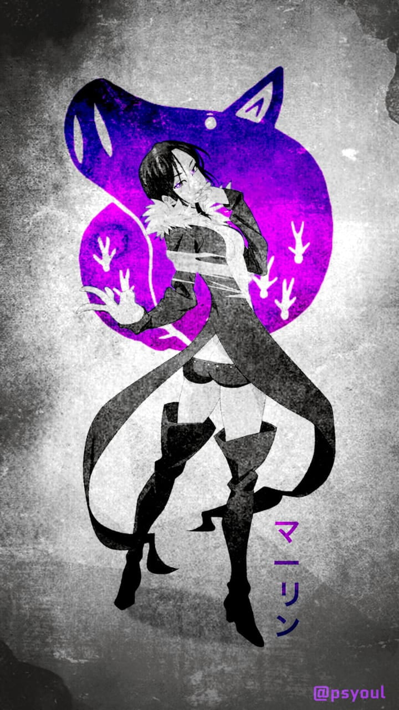

Merlin
Merlin, known as the Boar's Sin of Gluttony, is a powerful and enigmatic member of the Seven Deadly Sins. Merlin is a master sorceress with vast knowledge and magical abilities. Her true name is revealed to be "The Daughter of Belialuin", and she hails from the city of wizards. Her Sacred Treasure is the Morning Star Aldan, a crystal ball that assists her in casting spells. Merlin is known for her wisdom, intelligence, and calm demeanor, often serving as the strategic mind behind the group's plans. She has a mysterious past and a complex relationship with many characters, particularly Escanor, who is deeply in love with her.